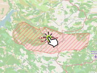

Example of calculating the amount of clicking on the marker.
Usage instructions:
Add this script to map GameObject.
Click on the marker. The number of clicks will be increased and it is shown in console.
Add this script to map GameObject.
Click on the marker. The number of clicks will be increased and it is shown in console.
MarkerClickCountExample.cs
/* INFINITY CODE 2013-2016 */
/* http://www.infinity-code.com */
using UnityEngine;
namespace InfinityCode.OnlineMapsExamples
{
[AddComponentMenu("Infinity Code/Online Maps/Examples (API Usage)/MarkerClickCountExample")]
public class MarkerClickCountExample : MonoBehaviour
{
public GameObject prefab;
public class MarkerClickCountExampleCustomData
{
public int clickCount;
}
private void Start()
{
// Create a new markers.
OnlineMapsMarker3D marker1 = OnlineMapsControlBase3D.instance.AddMarker3D(new Vector2(0, 0), prefab);
OnlineMapsMarker3D marker2 = OnlineMapsControlBase3D.instance.AddMarker3D(new Vector2(10, 0), prefab);
// Create new customData.
marker1.customData = new MarkerClickCountExampleCustomData();
marker2.customData = new MarkerClickCountExampleCustomData();
// Subscribe to click event.
marker1.OnClick += OnMarkerClick;
marker2.OnClick += OnMarkerClick;
marker1.OnPress += OnPress;
}
private void OnPress(OnlineMapsMarkerBase onlineMapsMarkerBase)
{
Debug.Log("OnPress");
}
private void OnMarkerClick(OnlineMapsMarkerBase marker)
{
MarkerClickCountExampleCustomData data = marker.customData as MarkerClickCountExampleCustomData;
if (data == null) return;
data.clickCount++;
Debug.Log(data.clickCount);
}
}
}